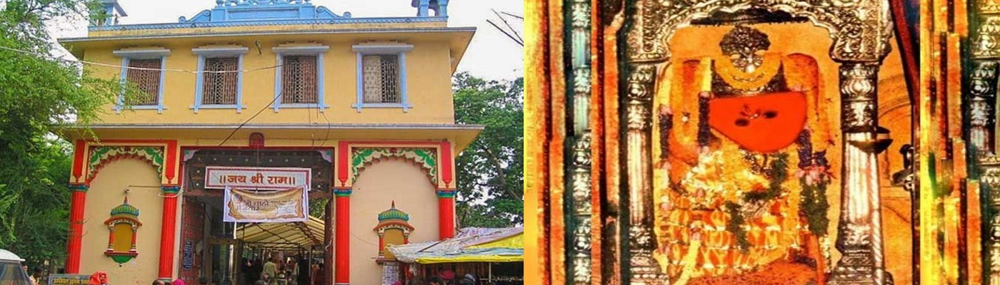

Ganga which is the life line of millions of people and of great religious significance is being polluted by both domestic sewage and industrial pollutants that are being dumped in to the river untreated. This causes health hazard for over 400 million people who directly and indirectly use …
The comprehensive plan was made at the request of Varanasi Nagar Nigam (VNN) as an alternative to the Govt’s Ganga Action Plan (run between 1986-1994) and to satisfy the objectives of Ganga Action Plan (GAP) launched in Varanasi in 1986 by Hon’ble Prime Minister Rajiv Gandhi Ji.
Society committed to clean Ganga ji. Comprising of active and committed members of the society, university professors, practicing religious people, poets, student representatives and friends of Ganga ji all over the world SMF is well respected for its work to clean Ganga ji at Varanasi.